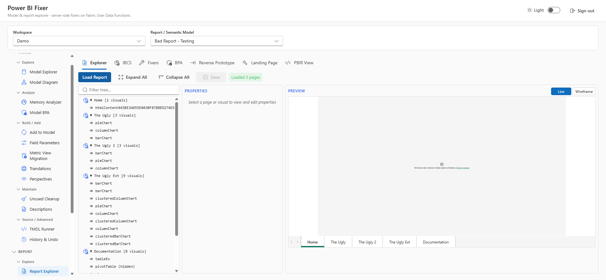
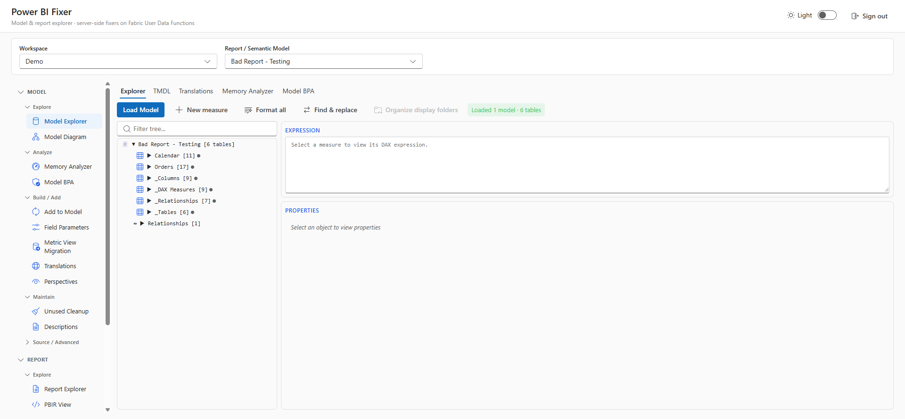
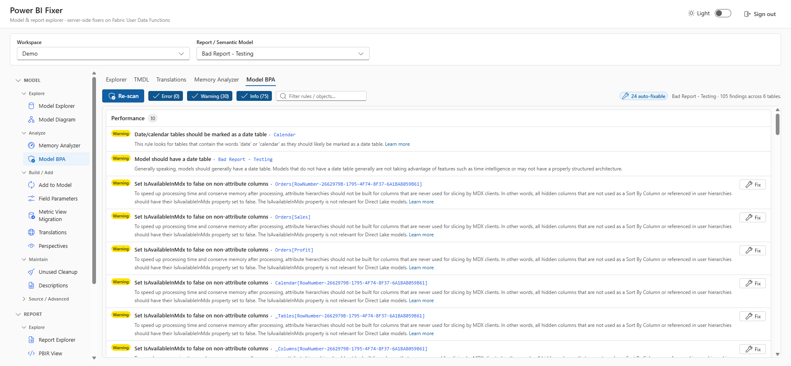
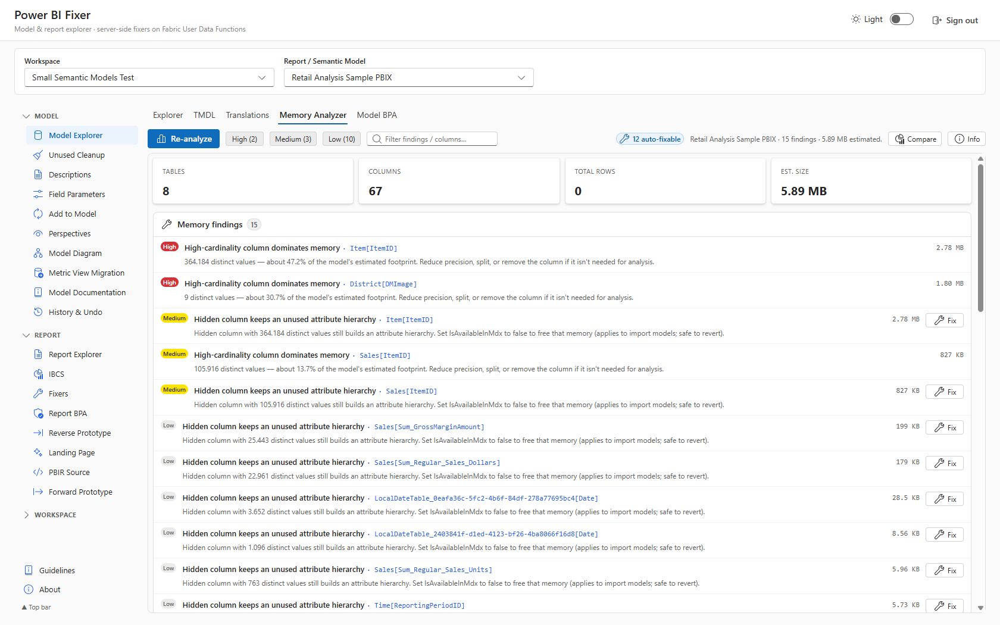
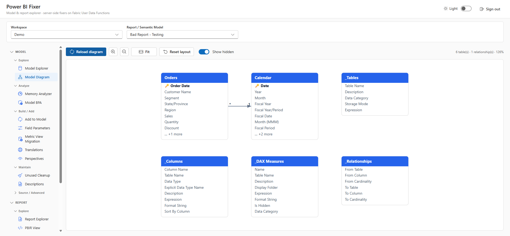
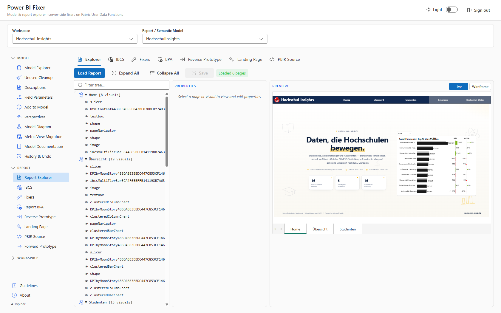
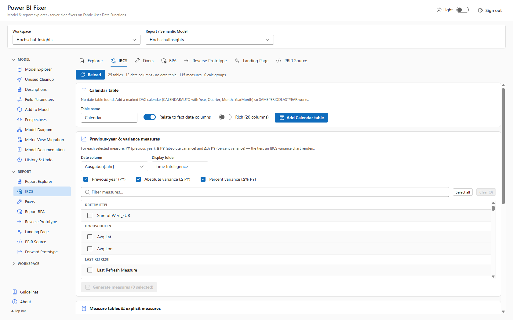
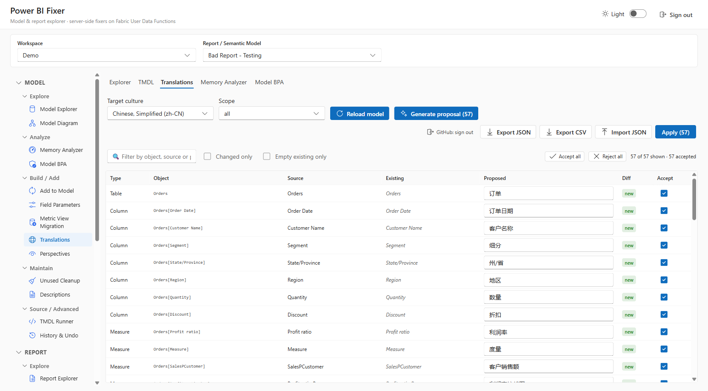

A Fabric-authenticated React app that inspects, edits, and fixes Power BI semantic models and reports — directly in the browser. Deploy it once on your Fabric capacity and share it with your whole team.
Built on Rayfin · reads & writes TMDL / PBIR via a Python User Data Function proxy
The same mission — scan, fix, and explore Power BI — in two editions. You're viewing the Fabric App edition.
Built on Semantic Link Labs — one line of Python in a Microsoft Fabric Notebook. An ipywidgets UI with 50+ fixers across 12 tabs. No install, no deploy.
Built on Rayfin — a Fabric-authenticated React app deployed once for your whole team. Reads and writes TMDL / PBIR through a Python backend. No local install.
It covers the core model-editing surface people rely on from desktop editors — and adds a full report layer, a free IBCS custom visual, and AI-assisted cleanup you won't find even in paid tooling. ★ marks the top picks.
Edit your tabular model with full access to all properties — and a lot more.
Edit and extend your report — fix, prototype, and document.
Runs on your own Copilot subscription via a once-off GitHub device-flow sign-in.
One-click deploy and workspace tooling.
A guided questionnaire captures your team's Power BI conventions, renders them as an in-app Guidelines view, and syncs to OneLake (pbi-fixer-guidelines-conventions.json) so the whole team shares one source of truth. This is the headline feature of the Fabric App edition — turning individual best practices into a shared, living standard for everyone who opens the app.
The Fabric App edition is a complete superset of the Semantic Link Labs notebook. Every one of the notebook's 12 tabs and 50+ fixers is here — now running in your browser and shared across your whole team — plus features the notebook never had. App only marks what's new in the Fabric App edition.
One-click scan & fix across all categories — report fixers, model fixers, Model BPA, and Report BPA. Grouped results with selective execution.
Browse tables, columns, measures, hierarchies, and relationships. Edit DAX, properties, and display folders. Create measures, calculated columns, and tables.
Navigate report pages & visuals with live preview. Scan for violations, fix chart formatting, convert to PBIR, and align visuals.
Create, edit, and delete model perspectives with tri-state checkboxes. Visual table-level summaries with one-click save.
Manage metadata translations across all model objects. One-click auto-translate — in the app, powered by your own Copilot, no API key.
Vertipaq statistics broken down by tables, columns, partitions, relationships. Color-coded size bars, cardinality, encoding, Direct Lake support.
19 best practice rules across 6 categories with one-click auto-fix. 15 rules have no equivalent auto-fix in any other tool.
Report-level best practice analysis with automatic PBIRLegacy-to-PBIR conversion. Catches unused custom visuals, report-level measures, and more.
Inspect delta table structure — parquet files, row groups, column chunks, and column statistics. Essential for Direct Lake optimization.
Generate report prototypes and whole-model documentation pages. Export layouts and round-trip them with Reverse Prototype.
Live ER relationship diagram with table boxes, columns, measures, layout, zoom, and hidden-object toggles.
Version info, credits, and links to the source code and documentation.
Turn an existing report back into an editable prototype scaffold — full round-trip between live reports and layouts.
Edit the raw model (TMDL) and report (PBIR) definitions directly in the browser — Power BI Desktop "TMDL view" parity, with source & diff.
Translations, descriptions, and display-folder organisation via your own Copilot (GitHub device-flow). Diff preview before every write-back.
Reorganise workspace items into folders with AI, mass-rename, and mass-delete — tidy an entire workspace in one place.
A guided wizard that deploys and configures Fabric workspace monitoring without leaving the app.
Run Semantic Link / TMSL / C# / Python against your items, or scaffold a ready-to-run Fabric notebook in one click.
Migrate Databricks Unity Catalog metric views straight into a Direct Lake semantic model.
Deploy curated Fabric jumpstarts and Awesome Rayfin apps into your workspace in a single click.
Add a notation-correct IBCS custom visual to any report — bundled in, no marketplace purchase required.
Warm Direct Lake column caching ahead of time so the first user queries return fast.
Deploy once on your Fabric capacity and share with the whole team — same app, no local install, central guidelines.
A visual tour through the app. Screenshots use sample semantic models and reports.
Model and report tooling in one Fluent UI shell, with light and dark themes.

Browse and edit a model's tables, columns, and measures with inline TMDL, a live properties pane, and one-click organise actions.

The Best Practice Analyzer with per-rule findings, severity chips, and one-click fixes for findings the engine can repair automatically.

Column and table size plus cardinality insights, with auto-fixable findings to shrink the model.

A live ER diagram of tables and relationships with layout, zoom, and hidden-object toggles.

The PBIR tree with a live / wireframe report preview and an editable properties pane.

Add a marked calendar table and generate previous-year & variance measures (PY, Δ PY, Δ% PY) that drive IBCS variance charts.

Generate culture translations for the whole model with GitHub Copilot via a one-time device-flow sign-in.

The whole thing runs as a single Fabric app item — a React SPA served with brokered Fabric auth, talking to a Python backend.
The SPA never calls Fabric REST directly — all calls go through the Python fabric_proxy UDF, which holds the on-behalf-of token server-side. That avoids browser CORS and keeps tokens out of the client.
No tenant, workspace, or capacity ids are hardcoded in source. Configuration is fully environment-driven, so the same build deploys cleanly across tenants.
PortableIf you maintain enterprise semantic models, you know the workflow: install a desktop editor, connect with XMLA, click through dialogs, export scripts, hope the diff is clean. The Fabric App edition takes a different angle.
It needs nothing installed locally and runs on top of your existing Fabric capacity. Sign in with your Fabric identity and start working — no license server, no install footprint, no XMLA endpoint plumbing.
No local installExplore and edit tables, columns, measures, relationships, display folders, descriptions, perspectives, field parameters, and the raw TMDL — everything you rely on from the free desktop editors.
Everyday editingA full report layer (PBIR explorer, diff, one-click fixes), a free IBCS-compliant custom visual, and AI-assisted cleanup for translations, descriptions, and display-folder organisation.
UniqueDeploy once, share a link. The Team Best-Practice Guidelines & Survey turns individual conventions into a shared, living standard synced to OneLake for everyone who opens the app.
Shared governance⚠️ Fair warning: The Fabric App edition is in Beta. It extends your workflow rather than replacing your desktop tools. Expect rough edges, and test on a non-production workspace first. Contributions and feedback are welcome.
Deploy the app to your Fabric capacity with Rayfin, then share the link with your team.
Grab the Power BI Fixer app template from the Awesome Rayfin catalog.
github.com/microsoft/awesome-rayfin → templates/pbi-fixer
Sign in and deploy the app as a single Fabric app item:
rayfin up
Open the app, capture your team guidelines, and start editing models & reports in the browser.
F or P capacity to host the app item
Python backend (the Fabric proxy)
Optional — for the AI cleanup features
For report fixes (auto-convert available)
🌍 Check region availability first. Fabric Apps (the workload this edition runs on) are not yet available in every capacity region. Before you deploy, confirm that the Fabric Apps workload is supported for your capacity's region in the official Fabric region availability list.
This tool would not exist without two people.
For showing me that something like this is even possible with Rayfin — the spark for the whole project — and for Semantic Link Labs.
With whom I started this tool. Whenever you see AI infused into PBI Fixer, it is most likely thanks to him.
Brokered Fabric auth + static hosting — so the whole thing runs as a single Fabric app item with a Python backend.
React, Vite, Fluent UI v9, Python User Data Functions, and Microsoft Fabric.